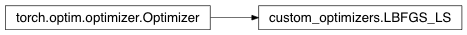

Custom optimizers¶
This package includes an lBFGS optimizer which supports different types of line-search, in particular backtracking, which is important for the image registration implementations. This implementation is available in the torch git repository (but not yet available in the standard release – as of July 2017)
Todo
Add support for multiple parameter groups.
-
class
custom_optimizers.LBFGS_LS(params, lr=1, max_iter=20, max_eval=None, tolerance_grad=1e-05, tolerance_change=1e-09, history_size=100, line_search_fn=None, bounds=None)[source]¶ Implements L-BFGS algorithm. .. warning:
This optimizer doesn't support per-parameter options and parameter groups (there can be only one).
Warning
Right now all parameters have to be on a single device. This will be improved in the future.
Note
This is a very memory intensive optimizer (it requires additional
param_bytes * (history_size + 1)bytes). If it doesn’t fit in memory try reducing the history size, or use a different algorithm.Parameters: - lr (float) – learning rate (default: 1)
- max_iter (int) – maximal number of iterations per optimization step (default: 20)
- max_eval (int) – maximal number of function evaluations per optimization step (default: max_iter * 1.25).
- tolerance_grad (float) – termination tolerance on first order optimality (default: 1e-5).
- tolerance_change (float) – termination tolerance on function value/parameter changes (default: 1e-9).
- line_search_fn (str) – line search methods, currently available [‘backtracking’, ‘goldstein’, ‘weak_wolfe’]
- bounds (list of tuples of tensor) – bounds[i][0], bounds[i][1] are elementwise lowerbound and upperbound of param[i], respectively
- history_size (int) – update history size (default: 100).